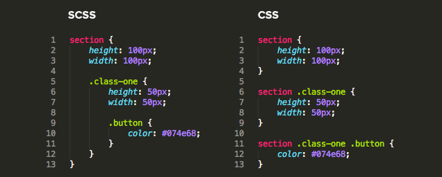

Open your .bash_profile or .bashrc file in home directory
# SASS Watch
function sw {
[ "$1" != "" ] && watch=$1 && shift || watch=sass/styles.scss:css/styles.css
sass --watch -l -t compressed $watch
}
Compiling SASS
cd into your themes directory
Check if there is a config.rb file
If so type compass watch
If not type sw
.sass
Original syntax
Indentation to separate code blocks
Newline characters to separate rules
HAML
#main
color: blue
font-size: 0.3em
a
font:
weight: bold
family: serif
&:hover
background-color: #eee
.scss

Any CSS is valid SASS
SASS
.menuWrap {
position: relative;
.mainNavigation {
border-right: 1px solid #eeeeee;
}
.menuItem {
width: 2em;
}
}
CSS
.menuWrap {
position: relative;
}
.menuWrap .mainNavigation {
border-right: 1px solid #eeeeee;
}
.menuWrap .menuItem {
width: 2em;
}
&
.stats {
h3 & {
fontsize: 12px;
}
}
// Compiles to
h3 .stats {
fontsize: 12px;
}
Do not nest too deeply
If past 3 indents deep ask yourself if neccesary
Variables
In sass/prepros/_variables.scss
$darkgrey: #333333;
$lightblue: #001eff;
// now we can use them in our code:
.myClass {
color: $darkgrey;
a {
color: $lightblue;
}
}
Math
.mo-better-percentage {
width: percentage(320px / 960px);
}
// compiles to
.mo-better-percentage {
0.9583333333333334%
}
Extends
.foo {
color: red;
}
.bar {
@extend .foo;
}
.foo, .bar {
color: red;
}
Mixins
Output lines of Sass
In sass/prepros/_mixins.scss
@mixin to declare mixin
@mixin border-radius($radius) {
-webkit-border-radius: $radius;
-moz-border-radius: $radius;
-ms-border-radius: $radius;
-o-border-radius: $radius;
border-radius: $radius;
}
h3 {
@include border-radius(3px);
}
Functions
A function is very similar to a mixin
The output from a function is a single value
The output can be any data type including numbers, strings, colors, booleans, or lists
Functions
Function to strip out unit of measurements
@function strip-unit($value) {
@return $value / ($value * 0 + 1);
}
$length : 42em;
$int : strip-unit($length); // 42
Unlike mixins you do not need to use @include to call a function
Media Queries
Nest media queries
No longer use seperate style sheet
We have a media query mixin named mq
#page {
width: 100%;
@include mq(mobile) { width: 80%; }
}
4 Default Media Queries Sizes
- large-display
- tablet
- mobile
- mobile-portrait
Can also use custom Media Queries Sizes
#page {
width: 100%;
@include mq(480, 550) { width: 80%; }
@include mq(480) { width: 50%; }
}
Mixin Librarys
Compass
Burboun
Things SASS can't do
Change or update variables live on site
Anything that is a limitation of CSS
SASS is awesome because of
Nesting
Variables
Math
Mixins
Functions